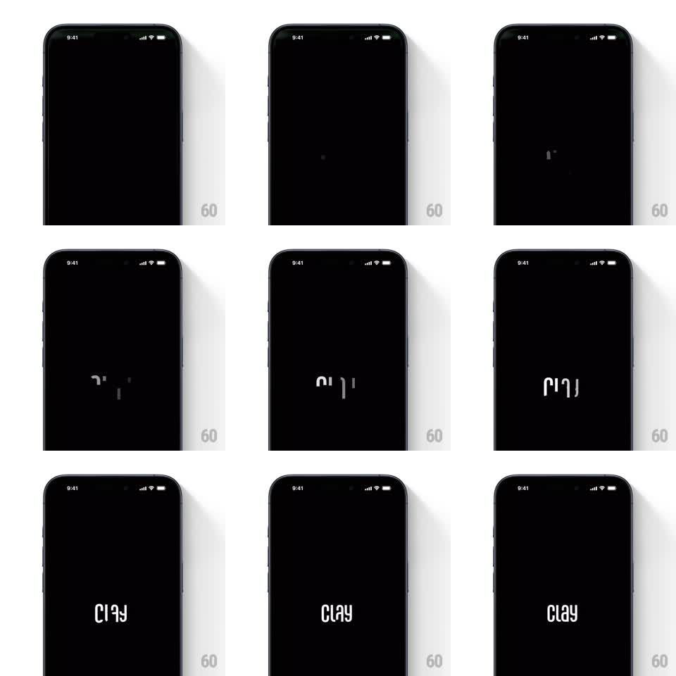

Media
Frame-by-frame

Rebuild this animation 1:1: Clay's splash - on a black screen, scattered letter fragments of the "clay" wordmark flip and tumble upright one by one until the word reads cleanly, holds, then gives way to the dashboard.

Rebuild this animation 1:1: Clay's splash - on a black screen, scattered letter fragments of the "clay" wordmark flip and tumble upright one by one until the word reads cleanly, holds, then gives way to the dashboard. ## Integration Integration: stack-agnostic spec - springs given as stiffness/damping, timed motions as duration + curve; map every value to your framework and animation library of choice. ## Scene Pure black screen. At center, the lowercase white wordmark "clay" in a light geometric sans. During the intro, individual letterforms appear rotated and displaced - some upside down, some sideways - then rotate into their final upright positions. ## Motion spec Pattern: tumbling letter assembly. - A faint dot blinks at center (~300ms) - the seed. - Letter fragments appear one at a time (every ~250ms), each entering rotated 90 to 180deg off axis and slightly offset from its final position. - Each letter rotates and drifts into place (rotation to 0, position settle, ~400ms per letter, ease-out) while the next fragment is already appearing - the motion overlaps. - Once all four letters are upright, the completed wordmark holds ~800ms, then scales up slightly (to ~1.15) and fades out (~350ms) as the dashboard reveals underneath. ## Calibration - The tumble is gentle - fragments drift and rotate, they do not fly in from off-screen. - Overlap the per-letter timings; strictly sequential rotation reads as a loading spinner. ## Reduced motion The wordmark fades in whole over 300ms, holds, fades to the dashboard. ## Don't miss - Letters resolve in reading order left to right (c, l, a, y) even though they enter scattered. - The final scale-up-and-fade is the handoff to the app - a hard cut loses the elegance.